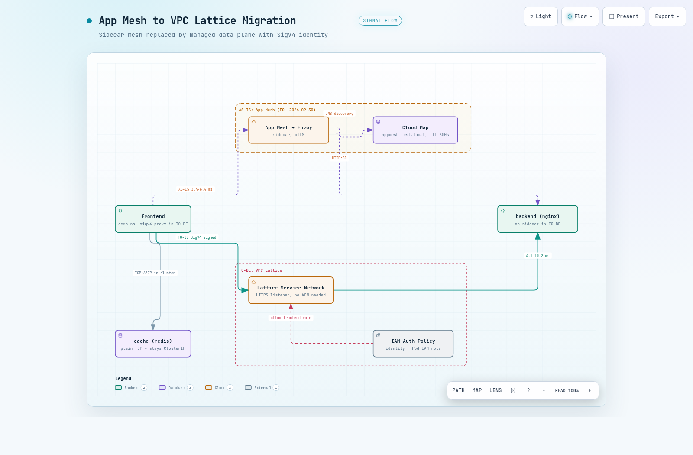

01왜 지금, 무엇으로 바뀌나
AWS App Mesh는 2026-09-30에 지원이 종료됩니다. 이 문서는 EOL을 약 6주 앞둔 실측 시점에 실제 EKS 클러스터에서 App Mesh를 VPC Lattice로 전환하는 전 과정을 직접 실행하고 측정한 기록입니다(작성 기준일 2026-08-24 기준으로는 EOL 약 5주 전). 문서의 수치는 추정이 아니라 2026-08-20~21 이틀에 걸쳐 두 차례 실측한 값입니다.
VPC Lattice는 사이드카 없이 동작하는 관리형 애플리케이션 네트워킹 서비스입니다. Kubernetes에서는 AWS Gateway API Controller가 표준 Gateway API 리소스(Gateway, HTTPRoute)를 Lattice의 Service Network, Service, Target Group으로 변환합니다. 데이터플레인을 AWS가 관리하므로 Envoy 사이드카가 Pod 스펙에서 사라집니다.
1.1 개념 매핑
기존 App Mesh 리소스는 Lattice에서 각각 무엇이 될까요? 아래 표는 이번 전환에서 실제로 적용한 매핑입니다.
| App Mesh | VPC Lattice | 비고 |
|---|---|---|
| Mesh | Service Network | Gateway 리소스로 표현 |
| Virtual Service | Lattice Service | HTTPRoute 1개 = Service 1개 |
| Virtual Node | Target Group | K8s Service를 backendRef로 지정 |
| Virtual Router / Route | Listener / Listener Rule | HTTPRoute의 rules |
| Virtual Gateway | NLB / ALB | Lattice는 외부 유입을 직접 받지 않음 |
| Envoy 사이드카 | 없음 (관리형 데이터플레인) | Pod 스펙에서 제거 |
| Cloud Map DNS | Lattice DNS (또는 커스텀 도메인) | 전환 시 DNS stale 주의 (04) |
| mTLS | 관리형 TLS + SigV4 / IAM Auth Policy | 암호화와 인증이 분리, ACM 불필요 |
1.2 핵심 차이 - 신원의 표현 방식
표에서 가장 주의할 행은 mTLS입니다. App Mesh mTLS는 전송 암호화와 상호 신원 검증을 겸했지만, Lattice에서는 이 두 역할이 분리됩니다. 암호화는 관리형 TLS(HTTPS 리스너)가, 인증은 SigV4 서명과 IAM Auth Policy가 맡습니다.
SigV4(AWS Signature Version 4)는 AWS API 호출에 쓰이는 요청 서명 방식입니다. Lattice는 서비스 간 HTTP 요청에도 이 서명을 요구할 수 있고, 서명한 주체가 곧 호출자의 신원이 됩니다.
따라서 핵심 차이는 신원의 표현 방식입니다. App Mesh mTLS는 인증서의 SAN(Subject Alternative Name)이 서비스 신원이었으나, Lattice는 Pod의 IAM Role이 신원입니다. Pod마다 IAM Role을 부여하는 IRSA(IAM Roles for Service Accounts) 또는 Pod Identity가 전제 조건입니다.
이 구조 변화의 실질적 이득은 인증서 운영 부담의 소멸입니다. SPIRE나 ACM Private CA로 인증서를 발급하고 순환하던 작업이 사라지고, 그 자리를 이미 운영 중인 IAM 신원 관리가 대신합니다.
02테스트 환경과 전환 설계
결과를 해석하려면 무엇을 어디서 측정했는지부터 확정해야 합니다. 검증은 2026-08-20 1차, 2026-08-21 2차(템플릿 구조로 전 단계 재실행)로 두 번 수행했고, 무엇이 되고 무엇이 안 되는가라는 결론은 두 차례 모두 동일했습니다.
2.1 검증 대상 애플리케이션
demo 네임스페이스에 HTTP 서비스와 TCP 서비스를 하나씩 두었습니다. 두 프로토콜의 전환 경로가 완전히 다르기 때문입니다(06). frontend가 backend(nginx)를 HTTP:80으로, cache(redis)를 TCP:6379로 호출하고, 서비스 디스커버리는 Cloud Map(appmesh-test.local)입니다.
frontend ──HTTP:80──▶ backend (nginx)
└─TCP:6379─▶ cache (redis)
서비스 디스커버리: Cloud Map (appmesh-test.local)클러스터는 appmesh-lattice-mig(EKS 1.33, eksctl 0.224.0)이고, 노드는 t3.xlarge 2대(AL2023)로 전부 프라이빗 서브넷에 있습니다. VPC는 GWLB 이그레스 방화벽과 인터페이스 엔드포인트를 쓰는 lab-dmzvpc(vpc-xxxx)이며, 이 구조가 만드는 함정은 03에서 다룹니다.
2.2 전환 설계 - 단계 분리와 blue/green
전환은 Phase 0~6으로 나눕니다. Phase 2까지는 기존 App Mesh 경로와 Lattice 경로가 병행되는 무중단 구간이고, Phase 3의 사이드카 제거가 유일한 전환 지점입니다. TCP 서비스는 본선과 분리해 Phase 5에서 별도로 검증했습니다.
사전 준비
SG / IRSA"] --> P1["Phase 1
AS-IS 기준선
실측"] P1 --> P2["Phase 2
Lattice 병행 구축
무중단"] P2 --> P3["Phase 3
사이드카 제거
전환 지점"] P3 --> P4["Phase 4
SigV4 + IAM
인증 강제"] P4 --> P6["Phase 6
App Mesh 정리"] P2 -.-> P5["Phase 5
TCP / TLSRoute
별도 검증"]
전환 지점을 지나는 방식은 두 가지입니다. in-place는 demo 네임스페이스에서 사이드카를 직접 제거하는 방식이고, blue/green은 사이드카 없는 사본(demo-green)을 옆에 세우고 진입점만 옮기는 방식입니다. green 네임스페이스에 Mesh 라벨을 붙이지 않는 것만으로 사이드카 주입과 Cloud Map 등록이 모두 일어나지 않아 blue와 완전히 분리됩니다.
어느 쪽이 안전할까요? 실측에서 in-place는 DNS stale 실패 구간을 만들었고(04), blue/green은 전환과 롤백 269 요청에서 실패 0건이었습니다. 이 문서는 in-place 경로를 단계별로 실측해 함정을 드러내되, 선택이 가능하다면 blue/green을 권장합니다.
2.3 재현 전제 조건 4건
이 검증에는 공식 문서만으로는 알기 어려운 전제 조건이 4건 있습니다. 하나라도 빠지면 이 문서의 결과가 재현되지 않습니다.
- Gateway API CRD는 experimental 채널이어야 합니다. standard 채널에는 TLSRoute가 없어 Phase 5가 no matches for kind TLSRoute로 실패합니다.
- GatewayClass는 수동 생성해야 합니다. Helm 차트가 만들어주지 않으며, 누락 시 Gateway가 PROGRAMMED 되지 않고 원인 파악이 어렵습니다.
- Phase 5 대조군의 tlsbackend-cert Secret을 먼저 만들어야 대조군 Pod가 기동합니다.
- Pod별 IRSA를 먼저 만들어야 합니다. App Mesh의 Envoy XDS 접근과 Lattice의 SigV4 신원이 같은 역할을 씁니다.
kubectl get crd tlsroutes.gateway.networking.k8s.io \
-o jsonpath='{.metadata.annotations.gateway\.networking\.k8s\.io/channel}' # → experimental
kubectl get gatewayclass
kubectl -n demo get secret tlsbackend-cert
kubectl -n demo get sa frontend -o jsonpath='{.metadata.annotations.eks\.amazonaws\.com/role-arn}'03무중단 병행 구축 (Phase 0~2)
Phase 0~2의 목표는 기존 App Mesh 트래픽을 건드리지 않은 채 Lattice 경로를 옆에 완성하는 것입니다. 실측에서 이 구간은 실제로 무중단이었고, 두 경로가 동시에 200을 반환하는 것까지 확인했습니다. 다만 시작 전에 네트워크 계층에서 넘어야 할 관문이 두 개 있습니다.
3.1 Lattice prefix list를 클러스터 SG에 허용 (Phase 0)
Lattice는 link-local 주소(라우팅되지 않고 같은 링크 안에서만 유효한 특수 대역)에서 Pod로 트래픽을 보냅니다. 클러스터 보안 그룹이 이 대역을 허용하지 않으면 모든 요청이 타임아웃되므로, AWS 관리형 prefix list를 먼저 허용합니다.
CLUSTER_SG=$(aws eks describe-cluster --name <cluster> \
--query 'cluster.resourcesVpcConfig.clusterSecurityGroupId' --output text)
for PL in "com.amazonaws.${REGION}.vpc-lattice" "com.amazonaws.${REGION}.ipv6.vpc-lattice"; do
PL_ID=$(aws ec2 describe-managed-prefix-lists \
--filters "Name=prefix-list-name,Values=${PL}" \
--query 'PrefixLists[0].PrefixListId' --output text)
aws ec2 authorize-security-group-ingress --group-id "$CLUSTER_SG" \
--ip-permissions "IpProtocol=-1,PrefixListIds=[{PrefixListId=${PL_ID}}]"
doneIPv6 쪽도 정말 필요할까요? 실측에서 Lattice DNS는 IPv6 link-local (fd00:ec2:80::a9fe:ab00)로 해석되었습니다. ap-northeast-2에서는 pl-0cd842b438fee3b4b(IPv4)와 pl-06da045b37607c8a5(IPv6) 2개를 허용했고, IPv6 prefix list를 빠뜨리면 안 됩니다.
3.2 프라이빗 서브넷 환경의 함정 - 실제로 겪은 이슈
검증 클러스터는 노드가 전부 프라이빗 서브넷에 있고, AWS API 통신은 인터페이스 VPC 엔드포인트를 경유합니다. 이 구조에서는 신규 클러스터의 SG가 엔드포인트 SG에 허용되어 있지 않아 노드 부트스트랩이 실패합니다.
nodeadm[2321]: SDK ... retrying request EC2/DescribeInstances, attempt 14
[FAILED] Failed to start nodeadm-config.service - EKS Nodeadm Config.
fatal: operation error EC2: DescribeInstances, context deadline exceeded증상이 모호해서 원인을 찾기 어렵습니다. 노드 인스턴스는 running인데 클러스터에 조인하지 않고, 노드그룹은 20분 이상 CREATING에 머뭅니다. 해결은 ec2, sts, ecr.api, ecr.dkr, logs 등 인터페이스 엔드포인트 SG에 신규 클러스터 SG의 443 인바운드를 허용한 뒤, 실패한 인스턴스를 종료해 ASG가 교체하게 하는 것입니다.
aws ec2 authorize-security-group-ingress --group-id <endpoint-sg> \
--ip-permissions "IpProtocol=tcp,FromPort=443,ToPort=443,\
UserIdGroupPairs=[{GroupId=<new-cluster-sg>}]"blue/green 전략으로 마이그레이션용 신규 클러스터를 만드는 경우라면, 이 작업을 사전 체크리스트에 반드시 포함해야 합니다.
3.3 AS-IS 기준선 (Phase 1)
병행 구축 전에 App Mesh 기준선을 수치로 남깁니다. 전환 후 회귀 여부를 판단할 근거가 되기 때문입니다. 실측 기준선은 HTTP(frontend → backend)가 200에 3.4~6.4ms(10회), TCP(frontend → cache)가 +PONG, Cloud Map 등록이 backend 2 / cache 1 / frontend 1이었습니다.
3.4 Lattice 병행 구축과 검증 (Phase 2)
컨트롤러는 Helm 차트에 defaultServiceNetwork를 주면 Service Network 생성과 VPC 연결까지 자동으로 처리합니다. 02의 전제 조건대로 GatewayClass를 수동 생성하고, App Mesh 리소스는 표 1의 매핑대로 HTTPRoute와 TargetGroupPolicy로 옮깁니다.
이때 Gateway는 한 파일에서만 정의해야 합니다. 라우트 파일이 Gateway를 다시 선언하면 재적용 순서에 따라 리스너가 사라집니다.
변환 결과는 어땠을까요? HTTPRoute는 Accepted=True, Lattice Service backend-demo는 ACTIVE, Target Group(IP 타입)은 타겟 2개가 HEALTHY였습니다. 아래 표는 병행 운영 상태에서 두 경로를 호출해 비교한 결과입니다.
| 항목 | App Mesh 경로 | Lattice 경로 |
|---|---|---|
| HTTP 응답 | 200 | 200 |
| 지연 | 3.4~6.4ms | 4.1~10.2ms |
| 첫 요청 | - | 1.03초 (1차 실측, 2차 재검증에서는 19.3ms로 미재현) |
Envoy 사이드카가 살아 있는 상태에서 두 경로가 동시에 200을 반환합니다. 따라서 이 단계까지는 롤백이 자유롭고, 서비스 단위로 천천히 진행할 수 있습니다.
Lattice 경로의 첫 요청 1.03초는 1차 실측에서 관찰된 연결 수립 오버헤드로 보이지만, 2차 재검증에서는 재현되지 않았습니다(19.3ms). 첫 요청 지연은 재현성이 낮으므로 "첫 요청이 느릴 수 있다" 정도로만 대비하고, 이 수치를 고정 값으로 SLO에 반영하지 마세요. 워밍업 없이 지연에 민감한 서비스라면 전환 직후 첫 요청 지연을 감안해야 합니다.
04전환 지점 최대 함정 - DNS stale (Phase 3)
Phase 3은 demo 네임스페이스의 사이드카 주입을 끄고 Deployment를 재기동하는 유일한 전환 지점입니다. Lattice 경로 자체는 무중단이었지만, 기존 Cloud Map 경로가 수 분간 실패하는 구간이 여기서 발생했습니다. 이 실측이 이 문서에서 가장 중요한 부분입니다.
kubectl label ns demo appmesh.k8s.aws/sidecarInjectorWebhook=disabled --overwrite
kubectl -n demo rollout restart deploy/backend deploy/frontend4.1 Lattice 경로는 무중단
재기동 후 Pod 구성은 2/2(nginx, envoy)에서 1/1(nginx)로 바뀌었습니다. 컨트롤러가 신규 Pod IP를 Target Group에 HEALTHY로 자동 등록하고 구 IP를 DRAINING으로 빼 주었기 때문에, Lattice 경유 호출은 200(5.7~9.2ms)을 유지했습니다.
4.2 구 경로는 4.5~5분 블랙홀 - 원인은 Cloud Map TTL 300초
문제는 기존 Cloud Map 경로였습니다. 사이드카 제거 직후 backend.appmesh-test.local 호출이 약 4.5~5분간 완전히 실패했습니다(HTTP 000, exit code 7, connection refused).
어느 계층이 낡아 있었을까요? Cloud Map API, Route 53 PHZ 레코드, VPC resolver 직접 조회까지는 모두 신규 IP를 반환했습니다. Pod가 실제로 쓰는 CoreDNS 경유 조회만 종료된 구 Pod의 IP를 반환하고 있었습니다. 이렇게 캐시에 낡은(stale) 레코드가 남아 구 경로가 실패하는 시간을 이 문서에서는 DNS stale 구간이라고 부릅니다.
00:45:47 10.11.71.147, 10.11.53.173 # 구 IP (종료된 Pod)
00:46:31 10.11.53.173, 10.11.71.147 # 구 IP
00:47:14 10.11.40.24, 10.11.76.115 # 신규 IP로 전환
00:47:58 10.11.76.115, 10.11.40.24 # 정상원인은 Cloud Map A 레코드의 TTL 300초입니다. TTL(Time To Live)은 DNS 응답을 캐시해도 되는 유효 시간으로, 컨트롤 플레인이 즉시 갱신되어도 resolver 계층의 캐시는 TTL이 만료될 때까지 구 IP를 돌려줍니다. CoreDNS 자체 캐시는 30초였지만 상위 레코드의 TTL 300초가 지배적이었습니다.
4.3 완화책 실측 - TTL 하향으로 36초까지 단축
선택지는 세 가지이고 우선순위가 있습니다. in-place 전환이라면 1번이 필수이고, 실패 구간 자체를 없애려면 2번을 택합니다.
- 마이그레이션 전에 Cloud Map 서비스의 DNS TTL을 하향합니다(300초 → 15~30초). 최소 TTL의 2배만큼 기다린 뒤 전환을 시작합니다.
- blue/green 전략을 씁니다. 사이드카 없는 사본을 새 네임스페이스에 배포하고 호출 측을 전환하면 이 구간이 발생하지 않습니다. 실제 구현과 측정에서 실패 요청 0건을 확인했습니다.
- in-place가 불가피하면 점검 시간대에 수행합니다.
1번은 코드 변경도 재배포도 필요 없는 단일 API 호출입니다.
aws servicediscovery update-service --id <service-id> \
--service '{"DnsConfig":{"DnsRecords":[{"Type":"A","TTL":30}]}}'효과는 얼마나 될까요? 같은 클러스터에서 TTL만 30초로 낮추고 전환을 재실행했습니다. 관측은 마이그레이션 대상 밖의 별도 Pod(메시 미참여)에서 3초 간격으로 수행했습니다.
02:08:20 dns=10.11.56.196,10.11.87.65 http=200 # 구 IP, 정상
02:08:23 dns=10.11.56.196,10.11.87.65 http=503 # 구 Pod 종료 시작 (Envoy draining)
... (503 지속)
02:08:51 dns=10.11.56.196,10.11.87.65 http=503
02:08:54 dns=10.11.56.196,10.11.87.65 http=000 # 구 Pod 소멸
02:08:59 dns=10.11.40.24,10.11.85.13 http=200 # 신규 IP로 전환, 회복아래 표는 TTL 하향 전후의 구 경로 실패 구간을 비교한 것입니다.
| 항목 | TTL 300초 | TTL 30초 |
|---|---|---|
| 구 경로 실패 구간 | 약 4.5~5분 | 약 36초 (02:08:23 → 02:08:59) |
| 실패 양상 | 연결 거부 (exit 7 / HTTP 000) | 대부분 503, 마지막 수초만 000 |
실패 구간이 TTL 값에 거의 선형으로 비례합니다. in-place 전환을 택한다면 TTL 하향은 반드시 선행해야 하는 조치입니다.
AWS 블로그가 in-place 방식을 "다운타임을 감내할 수 있는 경우"로 한정한 이유가 바로 이 구간입니다. 공식 문서에 실패 구간의 수치가 없어 직접 실측했습니다.
TTL 변경은 Route 53 PHZ 레코드에 즉시 반영되지만, 기존 TTL 300초로 캐시된 응답이 만료될 때까지 최대 300초를 더 기다린 뒤 전환해야 효과가 납니다.
실패 양상도 달라집니다. 구 Pod가 종료되는 동안에는 Envoy 사이드카가 살아 있어 업스트림 없이 503을 반환하고, 완전히 소멸한 뒤에야 연결 거부(000)가 됩니다. HTTP 5xx도 DNS stale 구간의 징후이므로 모니터링에서 놓치지 않아야 합니다.
4.4 앱 코드 수정을 피하는 방법 - 커스텀 도메인
전환 후 호출 측이 Lattice가 생성한 DNS 이름을 쓰도록 바꾸면 애플리케이션 수정이 필요해집니다. 이를 피하려면 Lattice Service에 커스텀 도메인을 지정하고, Route 53 PHZ에서 기존 이름 (backend.appmesh-test.local)을 Lattice DNS로 CNAME 처리합니다. 이 경로를 쓰면 애플리케이션 엔드포인트를 바꾸지 않고 전환할 수 있습니다.
05mTLS에서 SigV4로 (Phase 4)
Phase 4는 App Mesh mTLS가 하던 일을 Lattice 방식으로 대체하는 단계입니다. mTLS는 전송 암호화와 상호 신원 검증을 겸했지만, Lattice에서는 암호화를 관리형 TLS(HTTPS 리스너)가, 인증을 SigV4 서명과 IAM Auth Policy가 나누어 맡습니다. 이 분리가 mTLS와 실제로 동등한지 구간별로 실측했습니다.
5.1 클라이언트 측 - sigv4-proxy 사이드카
호출하는 쪽은 요청에 SigV4 서명을 붙여야 합니다. 앱 코드 수정 없이 처리하려면 aws-sigv4-proxy 사이드카를 씁니다. 애플리케이션이 바꾸는 것은 베이스 URL 하나 (http://localhost:8080)이고, 서명과 자격증명은 코드에 등장하지 않습니다.
serviceAccountName: frontend # Phase 0에서 만든 IRSA 재사용
containers:
- name: sigv4-proxy
image: public.ecr.aws/aws-observability/aws-sigv4-proxy:1.8
args:
- --name
- vpc-lattice-svcs
- --region
- ap-northeast-2
- --host # 대상을 프록시에 고정
- <backend의 Lattice 도메인>
- --unsigned-payload # 스트리밍/대용량 바디 대응
- --upstream-url-scheme # 필수. 기본값은 https
- http
ports: [{ containerPort: 8080 }]자격증명은 IRSA가 표준 AWS SDK 자격증명 체인으로 넣어주므로, 앱은 물론 Deployment에도 키가 등장하지 않습니다. 한 가지 함정은 --upstream-url-scheme http입니다. 프록시의 upstream 기본값이 HTTPS라서 Lattice 리스너가 HTTP:80이면 502가 나는데, 서명은 성공하고 프록시 단계에서 실패하므로 로그를 봐야 원인이 보입니다.
프록시 Deployment 하나를 여러 서비스가 공유하면 서명 신원이 하나로 합쳐져 IAM Auth Policy의 Principal이 호출자를 구분하지 못합니다. 5.4의 "다른 서비스 신원 403"이 성립하지 않게 되므로, 사이드카를 유지해 Pod 단위 신원을 지켜야 합니다.
5.2 HTTPS 리스너에 ACM 인증서가 필요 없다 - 실측
암호화 쪽은 인증서 준비가 필요할까요? Gateway에 HTTPS 리스너를 추가하면 Lattice가 자기 생성 FQDN에 대해 관리형 인증서를 자동 발급합니다. 실측에서 customDomainName=null, certificateArn=null 상태로 HTTPS 리스너가 생성되고 SigV4 호출이 200이었으며, ACM 인증서(BYOC)는 커스텀 도메인을 쓸 때만 필요합니다.
# Lattice Service 설정 확인
{"customDomainName": null, "certificateArn": null, "authType": "AWS_IAM"}
# sigv4-proxy --upstream-url-scheme https 로 호출
200 0.094 / 0.008 / 0.004 / 0.005 / 0.004 s
# 익명(서명 없음) HTTPS 직접 호출
403스펙상 함정이 하나 있습니다. HTTPS 리스너에서 tls.certificateRefs를 비우면 Gateway API CRD가 거부하는데, 커스텀 도메인이나 ACM 인증서가 필요해서가 아닙니다. 스펙 요건일 뿐 컨트롤러는 값을 사용하지 않으므로 더미 이름을 넣으면 통과합니다.
HTTPS 리스너는 443에 두는 편이 유리합니다. 443이 아닌 포트를 쓰면 sigv4-proxy에 --host <도메인>:<포트>와 --sign-host를 함께 지정해야 합니다.
5.3 Lattice에서 Pod로 - 재암호화와 헬스체크 함정
mTLS의 전송 암호화와 동등해지려면 Lattice에서 Pod로 가는 구간도 암호화해야 합니다. TLS를 종료하는 백엔드를 두고 TargetGroupPolicy에 protocol: HTTPS를 지정하면 되는데, 이때 healthCheck.protocol: HTTPS를 빠뜨리면 타겟이 영구히 UNHEALTHY가 됩니다. 헬스체크 기본값이 HTTP라서 TLS 포트로 평문 요청이 나가고, 백엔드가 400을 반환하기 때문입니다.
# protocol: HTTPS, healthCheck.protocol 미지정
ip port reason status
10.11.88.145 8443 StatusCodeMismatch_400 UNHEALTHY
10.11.47.2 8443 StatusCodeMismatch_400 UNHEALTHY
# healthCheck.protocol: HTTPS 추가 → 25초 내 반영
ip port reason status
10.11.88.145 8443 None HEALTHY
10.11.47.2 8443 None HEALTHY수정 후 end-to-end 경로(클라이언트 → HTTPS:443 → Lattice → HTTPS:8443 → Pod)는 SigV4를 적용한 상태에서 첫 요청 0.120초, 이후 0.004~0.009초에 200을 반환했습니다. 이렇게 두 구간을 모두 켜면 mTLS의 전송 암호화와 동등한 end-to-end 암호화가 됩니다.
백엔드 인증서는 자체 서명으로 충분하고 CA/신뢰 번들 설정도 필요 없습니다. Lattice가 백엔드 인증서를 검증하지 않기 때문입니다.
5.4 서비스 측 - IAM Auth Policy가 mTLS의 신원 검증과 동등한가
신원 검증은 서비스 쪽의 IAMAuthPolicy가 맡습니다. IAMAuthPolicy는 라우트에 붙이는 리소스 기반 인가 정책으로, 적용하면 Lattice Service의 authType이 NONE에서 AWS_IAM으로 전환됩니다. Principal은 frontend Pod의 IAM Role(IRSA) ARN입니다.
apiVersion: application-networking.k8s.aws/v1alpha1
kind: IAMAuthPolicy
metadata: { name: backend-auth, namespace: demo }
spec:
targetRef: { group: gateway.networking.k8s.io, kind: HTTPRoute, name: backend }
policy: |
{ "Version": "2012-10-17",
"Statement": [{ "Effect": "Allow",
"Principal": { "AWS": "<frontend Pod IAM Role ARN>" },
"Action": "vpc-lattice-svcs:Invoke", "Resource": "*",
"Condition": { "StringEquals": { "vpc-lattice-svcs:SourceVpc": "vpc-xxxx" } } }] }Principal의 Role ARN은 클러스터 생성 후에야 확정되므로 매니페스트에 박아 두면 다른 환경에서 재사용할 수 없습니다. IRSA 생성 이후에 렌더링 도구로 채워 넣는 편이 안전합니다.
mTLS의 SAN 기반 신원 검증과 동등한지 판단하려면 몇 가지 경우를 갈라야 할까요? 세 가지입니다. 아래 표는 세 호출 주체로 같은 서비스를 호출한 실측 결과입니다.
| # | 호출 주체 | 결과 | 의미 |
|---|---|---|---|
| 1 | 서명 없음 (익명) | 403 | 무인증 차단 |
| 2 | frontend 신원 + 서명 | 200 (4.7~42ms) | 허가된 서비스 통과 |
| 3 | cache 신원 + 서명 | 403 | 다른 서비스 신원 차단 |
3번이 핵심입니다. cache 역할에는 vpc-lattice-svcs:Invoke 권한을 부여했는데도 403입니다. 호출자 IAM 권한과 서비스 측 인가가 독립적으로 이중 적용되며, 이는 mTLS의 SAN 기반 신원 검증과 동등한 서비스 단위 인가입니다.
# 1) 서명 없는 요청
AccessDeniedException: User: anonymous is not authorized to perform:
vpc-lattice-svcs:Invoke on resource: arn:aws:vpc-lattice:...:service/svc-091a.../
# 3) cache 신원 (IAM에 Invoke Allow는 있으나 Auth Policy Principal 아님)
AccessDeniedException: User: arn:aws:sts::********6239:assumed-role/...Role1-z3IS...
is not authorized to perform: vpc-lattice-svcs:Invoke ...5.5 단계적 적용 순서
한 번에 조이면 장애 시 원인 분리가 어렵습니다. 실측도 아래 순서로 진행했고, 단계마다 확인할 신호가 하나씩 있습니다.
- authType=NONE 상태로 트래픽만 Lattice로 전환해 경로를 검증합니다.
- sigv4-proxy 사이드카를 투입해 서명 경로가 200인지 확인합니다 (인증은 아직 OFF).
- IAMAuthPolicy를 적용해 AWS_IAM 전환과 익명 403을 확인합니다.
- Principal을 실제 호출자만으로 축소하고 SourceVpc 등 Condition을 강화합니다.
06TCP 서비스는 그대로 전환 불가 (Phase 5)
HTTP 경로는 전환이 끝났지만 cache(redis, TCP:6379)가 남았습니다. Lattice의 TCP 지원은 TLS passthrough 형태입니다. TLS passthrough는 Lattice가 TLS를 종료하지 않고 암호화된 연결을 그대로 백엔드까지 통과시키는 방식으로, TLSRoute 리소스로 구성합니다. 가장 판단이 필요했던 부분이라 대조 실험으로 원인을 분리했습니다.
6.1 시도 - TLSRoute로 redis 전환
리소스는 전부 정상 생성됩니다. TLSRoute는 Accepted=True, Lattice Service cache-demo는 ACTIVE, 리스너는 TLS_PASSTHROUGH 타입으로 만들어졌습니다. 그러나 redis 접속은 어느 방식으로도 실패합니다.
# 1) 평문 TCP로 TLS 리스너에 접속
$ exec 3<>/dev/tcp/cache-demo-....on.aws/443; printf 'PING\r\n' >&3
Connection reset by peer (exit 1)
# 2) SNI를 TLSRoute hostname에 맞춘 정상 TLS 핸드셰이크
$ curl -sk --connect-to 'cache.appmesh-test.local:443:<lattice-dns>:443' \
https://cache.appmesh-test.local/
HTTP 000 (exit 28, timeout)2번이 중요합니다. SNI(TLS 핸드셰이크에서 접속하려는 호스트명을 미리 알려주는 확장)는 문제없이 통과했는데, 백엔드(redis)가 TLS 핸드셰이크에 응답하지 못해 타임아웃됩니다. 즉 막히는 지점은 Lattice가 아니라 백엔드입니다.
passthrough 리스너는 1차 실측에서 443, HTTPS 리스너에 443을 넘긴 뒤에는 8443으로 옮겨 회귀 검증했고, 결론과 실패 양상은 포트와 무관하게 동일했습니다.
6.2 대조군 - TLS를 말하는 백엔드라면 정상
원인을 확정하기 위해 TLS를 직접 종료하는 nginx(8443, 자체 서명 인증서)를 같은 TLS 리스너에 붙였습니다. SNI를 TLSRoute hostname에 맞추면 tls-passthrough-ok 본문과 함께 200, Lattice 생성 도메인을 SNI로 보내면 exit 35(TLS 오류)였습니다. 라우팅이 SNI 기반이라는 것과, redis의 실패가 백엔드 문제라는 것이 함께 확정됩니다.
부수 발견 두 가지도 운영에 중요합니다. TargetGroupPolicy의 헬스체크 프로토콜은 HTTP/HTTPS만 지원해 TCP 헬스체크가 불가하므로 TCP 타겟은 healthCheck 없이 두어야 하고, 이때 타겟이 UNAVAILABLE(HealthCheckDisabled)로 표시되어도 트래픽은 차단되지 않습니다. 아래 표가 Phase 5 실측의 결론입니다.
| 확인 사항 | 결과 |
|---|---|
| Lattice TLS passthrough 동작 | 정상 동작함 |
| 라우팅 기준 | SNI 기반 - TLSRoute hostnames와 SNI가 일치해야 함 |
| 타겟 UNAVAILABLE (HealthCheckDisabled) | 트래픽을 차단하지 않음 (정상 통신됨) |
| TCP 헬스체크 | 미지원 (HTTP/HTTPS만) |
| 평문 TCP 서비스 (redis 등) | 전환 불가 - 백엔드가 TLS를 말해야 함 |
| TLS passthrough 경로의 IAM 인증 | 적용 불가 (SigV4는 HTTP 계층) |
6.3 평문 TCP 서비스의 선택지 3개
그렇다면 redis 같은 평문 TCP 서비스는 어떻게 해야 할까요? 선택지는 셋입니다.
- 백엔드에 TLS를 적용하고 TLSRoute로 전환합니다 (예: redis --tls-port). 단 IAM 인증은 적용되지 않으므로 인가는 SG/네트워크 계층에 의존합니다.
- Lattice 대상에서 제외하고 클러스터 내부 통신(ClusterIP/Headless)을 유지합니다.
- VPC 경계를 넘어야 한다면 Lattice Resource Configuration(TCP 리소스)을 검토합니다.
실무 판단으로는, cache처럼 동일 클러스터 내부에서만 쓰이는 평문 캐시를 억지로 Lattice에 올릴 이유가 없어 2번이 가장 단순하고 합리적입니다. blue/green 전략에서는 green의 cache를 ClusterIP로 두면 되므로, 이 선택이 예외 처리가 아니라 기본 설계가 됩니다.
07롤백과 운영 가이드
되돌릴 수 있어야 전환할 수 있습니다. Phase 3 이후에도 App Mesh 컨트롤러와 Mesh/VirtualNode를 남겨 두면 AS-IS로 복귀할 수 있고, 아래 절차를 실제로 실행해 App Mesh 기준선까지 복구되는 것을 확인했습니다.
# 1) Lattice 리소스 제거 (Lattice Service / Target Group이 함께 삭제됨)
kubectl -n demo delete iamauthpolicy backend-auth
kubectl -n demo delete httproute backend
kubectl -n demo delete tlsroute cache tlsbackend
kubectl -n demo delete targetgrouppolicy backend cache
# 2) Envoy 사이드카 복원
kubectl label ns demo appmesh.k8s.aws/sidecarInjectorWebhook=enabled --overwrite
kubectl -n demo rollout restart deploy/backend deploy/frontend deploy/cache롤백에서 관측된 동작은 네 가지입니다.
- 라우트(HTTPRoute/TLSRoute)를 삭제하면 대응하는 Lattice Service와 Target Group이 모두 삭제됩니다.
- Gateway를 삭제해도 Service Network는 유지됩니다. defaultServiceNetwork로 관리되기 때문입니다.
- Gateway를 재적용하면 기존 Service Network에 재연결되고, 신규 Lattice Service ID가 발급됩니다.
- 사이드카 복원은 rollout restart만으로 전부 2/2로 복구되었고, Envoy egress 클러스터도 재생성되었습니다.
Lattice Service의 도메인은 서비스 ID 기반이라 재생성 시 바뀝니다. 호출 측이 Lattice 생성 도메인을 직접 쓰고 있으면 롤백 후 재전환할 때 엔드포인트가 달라집니다. 커스텀 도메인과 Route 53 CNAME(04)을 쓰면 이 문제가 사라집니다.
7.1 재현성 - 2차 재검증
이 문서의 결과는 한 번의 실행에서 나온 값이 아닙니다. 2026-08-21에 템플릿 구조로 재작성한 매니페스트로 Phase 1~5 전체를 다시 실행했습니다. 지연 같은 개별 수치는 회차마다 조금씩 달랐지만, 무엇이 되고 무엇이 안 되는가라는 결론은 두 차례 모두 동일했습니다.
7.2 권장 순서 요약
실측 전체를 운영 절차로 압축하면 다섯 단계입니다.
- 사전 준비 - Lattice prefix list SG 허용(IPv4 + IPv6), Pod별 IRSA 생성, in-place 전환이라면 Cloud Map TTL 하향을 선행합니다.
- 병행 구축 - Gateway/HTTPRoute로 Lattice 경로를 만들고 두 경로가 동시에 200인지 확인합니다.
- 전환 - 가능하면 blue/green을 택하고, in-place라면 TTL 하향 후 기존 캐시가 만료되는 최대 300초를 기다린 뒤 수행합니다.
- 인증 강화 - authType=NONE, sigv4-proxy, IAMAuthPolicy, Principal/Condition 축소의 순서로 단계적으로 조입니다.
- 정리 - 평문 TCP는 클러스터 내부 통신으로 유지하고, App Mesh 리소스는 롤백 필요가 사라진 뒤에 제거합니다.
결론: 한 문장으로 요약하면, 이 마이그레이션의 본질은 사이드카를 지우는 일이 아니라 신원을 인증서(SAN)에서 IAM Role로 옮기는 일이며, 실패는 Lattice가 아니라 전환 지점의 DNS 캐시와 평문 TCP에서 발생하므로, TTL 하향(실측 실패 구간 약 36초) 또는 blue/green(실측 실패 0건)과 TCP 분리 설계를 선행하면 EOL 전에 안전하게 전환할 수 있습니다.

--참고 자료
공식 문서
- What is AWS App Mesh? - AWS 공식 문서, App Mesh EOL(2026-09-30) 공지 포함 https://docs.aws.amazon.com/app-mesh/latest/userguide/what-is-app-mesh.html
- What is Amazon VPC Lattice? - AWS 공식 문서 https://docs.aws.amazon.com/vpc-lattice/latest/ug/what-is-vpc-lattice.html
- SigV4-signed requests in VPC Lattice - AWS 공식 문서, SigV4 인증 요청 구성 https://docs.aws.amazon.com/vpc-lattice/latest/ug/sigv4-authenticated-requests.html
프로젝트 문서
- AWS Gateway API Controller for VPC Lattice - 컨트롤러 공식 문서 https://www.gateway-api-controller.eks.aws.dev/
- Kubernetes Gateway API - SIG-Network 공식 문서 (standard/experimental 채널) https://gateway-api.sigs.k8s.io/